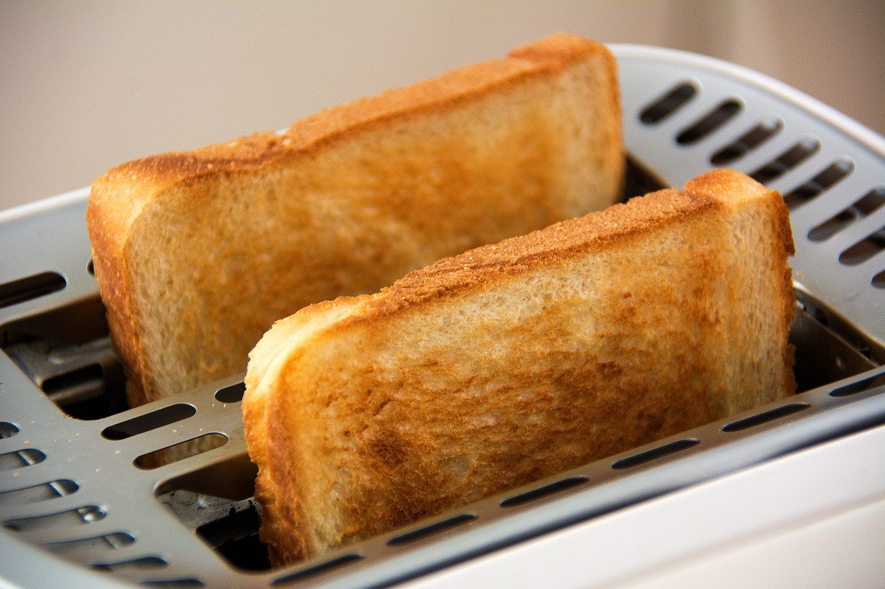

Toast
Details
This exquisite recipe is almost too easy to be believed!
Alex wows us with his homemade, lightly toasted, heavily
buttered toast that you just gotta try.
We asked Alex just how he came up with the idea for the recipe.
He said "Well, after years of cooking, I realized that everything
tastes better with butter. Think about it. There's buttered steak,
buttered potatoes, peanut buttered. I've even been known to put
butter on my butter."
Click here to learn more about toast.

Ingredients
- bread
- another piece of bread
- some more bread if you're really hungry
- block o' butter
Directions
- Put bread in toaster.
- Put another slice of bread in toaster.
- *Optional* If you have one of them fancy large toasters, you can put yet another slice of bread in there. Only if you want though.
- Make sure the setting is set to low, this is a recipe for lightly toasted tosat after all...
- Go ahead and push the lever on your toaster down. Oh, be sure the toaster is plugged in while you're at it.
- When toast pops up, it is ready to be buttered!
- Using a butter knife, place about a half a block of butter on each piece of toast.
- Spread evenly across the face of the toast.
- Enjoy your butter - I mean toast!
This recipe was provide by Alex himself.